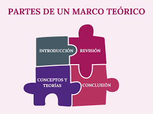
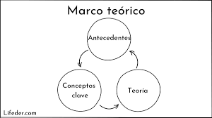

Marco teorico
Definición 1:
Como su propio nombre lo dice, el pensamiento reflexivo es aquel que nos permite reflexionar acerca de un tema en específico. Es una de las fases más importantes de un trabajo de investigación, consiste en desarrollar la teoría que va a fundamentar el proyecto con base al planteamiento del problema que se ha realizado. Existen numerosas posibilidades para elaborarlo, la cual depende de la creatividad del investigador. Una vez que se ha seleccionado el tema objeto de estudio y se han formulado las preguntas que guíen la investigación, el siguiente paso consiste en realizar una revisión de la literatura sobre el tema. Esto consiste en buscar las fuentes documentales que permitan detectar, extraer y recopilar la información de interés para construir el marco teórico pertinente al problema de investigación planteado.
Definición 2:
El marco teórico es la recopilación de antecedentes, investigaciones previas y consideraciones teóricas en las que se sustenta un proyecto de investigación, análisis, hipótesis o experimento. El marco teórico, también llamado marco de referencia, es el soporte teórico, contextual o legal de los conceptos que se utilizaron para el planteamiento del problema en la investigación.
|
|
|
|---|---|
|  |  |